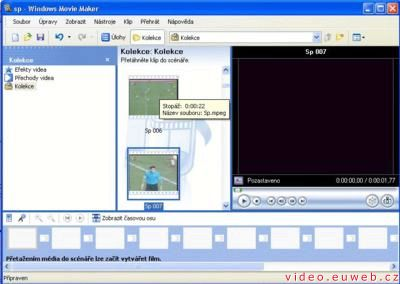
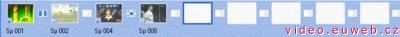
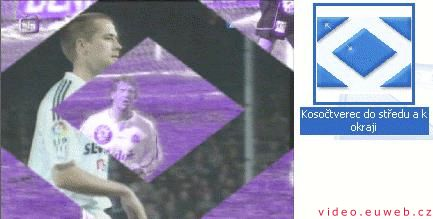

Windows Movie Maker
Prográmek z dílny Micro$oftu sloužící k převodu videa do jeho kodeků (WMA a WMV). Umožňuje také nahrávání (grabování) videa z TV karty.
Takhle se chlubí on sám: Můžete v počítači digitalizovat a upravovat digitální média a sdílet uložené filmy pomocí e-mailu, Internetu, zapisovatelných disků CD nebo digitálních videokazet.
Podpora souborů
Podle sebe by měl WMM umět otevírat:- Zvukové soubory: AIF, AIFC, AIFF, ASF, AU, MP2, MP3, MPA, SND, WAV, WMA
- Obrazové soubory: BMP, DIB, EMF, GIF, JFIF, JPE, JPEG, JPG, PNG, TIF, TIFF, WMF
- Videosoubory: ASF, AVI, M1V, MP2, MP2V, MPE, MPEG, MPG, MPV2, WM, WMV
Mně se nepodařil otevřít MPEG-2 soubor (nahrávka z TV karty přes InterVideo)
Práce s programem
Otevření souboru
Soubor - Nový projekt. poté Soubor - Import kolekcí... a vyberete si, co chcete zpracovávat (video nebo audio). Teď to bude vypadat zhruba 
{kind=link}
Přidání efektů a prolínaček
Film se rozdělí na několik částí, které muže přidávat do scénáře (kliknout pravým tlačítkem myši - Přidat do scénáře). Dole v liště se Vám budou přidávat části filmu
{kind=link}
Poté můžete přidat ke každé části efekt a mezi ně prolínačky.
Efekty - Na vybranou část ve scénáři klikněte pravým tlačítkem myši a
zvolte Efekty videa... V tabulce, která se objeví, jich můžete přidat,
kolik chcete.
Prolínačky - V levém sloupci klikněte na Přechody videa, nějaký si vyberte a přesuňte ho na místo kam chcete (mezi videa ve scénáři).
Ve videu to pak vypadá jako na obrázku (s efektem, jinak je barva samozřejmě normální).
Uložení
Pro uložení videa dejte Soubor - Uložit soubor filmu... a zvolte Tento počítač a Další>. Poté jméno a umístění souboru. Na dalším okně zvolíte kvalitu. Doporučuju tu, co tam je přednastavená.
Video na PC: Vytvořeno v roce 2005 a víc. Autorem je Jan 'Šlaha' Šlahora. Veškerá práva vyhrazena autorům článků. Pokud není uvedeno jinak, jsem to já.